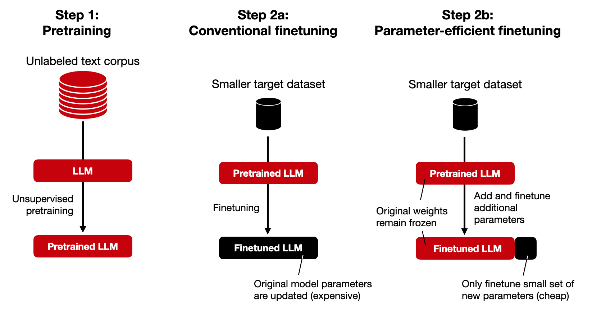

Fine-Tuning Methods: An Overview

-
There are two primary approaches to fine-tuning an LLM.
-
Full Fine-Tuning: Updates all of the model's weights.
-
Parameter-Efficient Fine-Tuning (PEFT): Updates only a small subset of the model's parameters.
-
PEFT methods are now the most common due to their efficiency.